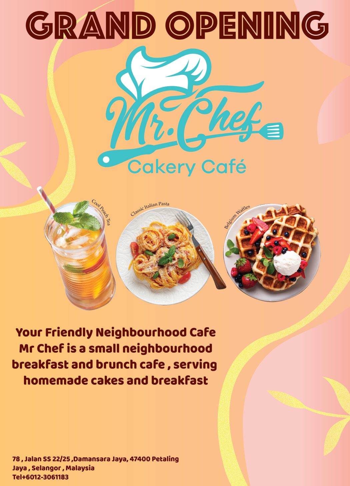
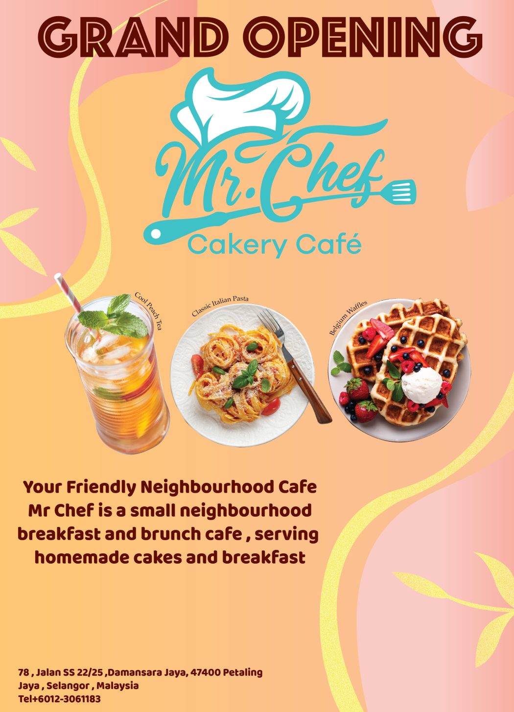

Mr.Chef Opening Poster
NAME
Mr.Chef Opening Poster
PROJECT INFO
Created on Adobe Illustrator in Year 2023 , Size 297mm x 420mm
DESCRIPTIONS
The Mr.Chef opening poster was created in 2022 using Adobe Illustrator. This was designed for my assignment in design fundamentals class. The topic is to design an opening poster based on the requirements that were given to me. I use warm colours for designing this poster because I want to go for a more summer feeling and I also want to let the logo stand out more. I added some grain texture to the leaves and made the headline very large and picked an eye-catching font. On the centre of the poster I choose three items from the menu given to me to put it on the poster.